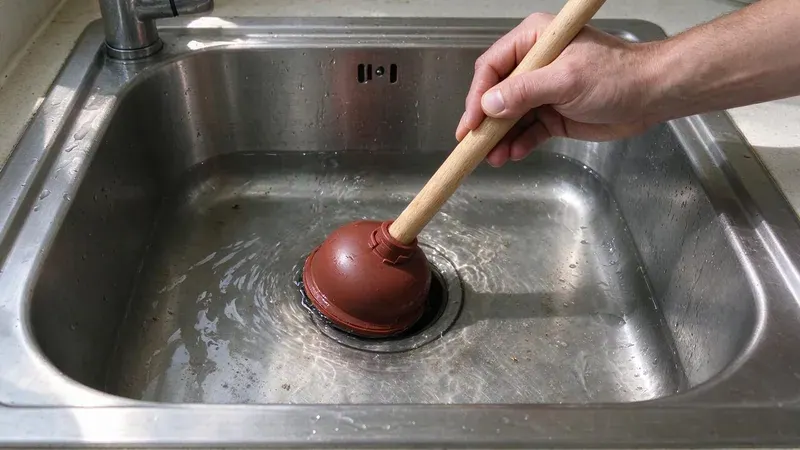

Understanding Kitchen Sink Backups
A backed-up kitchen sink is more than just an annoyance, it's a sign that something is blocking your plumbing system. In homes with older pipes or hard water, these issues can be fairly common. Over time, grease, food particles, and even mineral deposits from the water supply build up inside pipes, narrowing the passage and finally causing a complete blockage. It's a problem we see all the time in homes across Wisconsin. Knowing what causes these clogs is the first step to keeping your kitchen sink running freely.
Common Culprits Behind Clogged Kitchen Sinks
Most kitchen sink clogs aren't mysterious, they're usually a result of everyday habits. The number one offender is grease. When you pour hot grease down the drain, it might be liquid, but as it cools, it solidifies and sticks to the inside of your pipes. Over time, this grease accumulates, catching other debris and creating a stubborn blockage. Food scraps, even small ones from a garbage disposal, can also contribute. Coffee grounds, pasta, rice, and even fibrous vegetables like celery can clump together and form a tough plug in your drain line. Sometimes, it's not just what goes down the drain, but also the age and condition of your plumbing. Older cast iron pipes, common in many homes built before the 1980s, can corrode and roughen on the inside, making them more prone to catching debris.
Prevention Is Key: Keeping Your Drains Clear
Preventing kitchen sink backups is much easier, and cheaper, than dealing with a serious clog. It mostly comes down to being mindful of what goes into your drain. Here are some straightforward tips to help you avoid future headaches:
- Scrape Plates Thoroughly: Before rinsing dishes, scrape all food scraps into the trash or compost. Even small bits can build up.
- Never Pour Grease Down the Drain: This is the golden rule. Let grease cool and solidify in a disposable container, then toss it in the trash.
- Use a Drain Strainer: A simple screen or basket strainer in your sink opening can catch food particles before they enter your pipes.
- Run Cold Water with Disposal: When using your garbage disposal, always run plenty of cold water. This helps flush food particles through the drain line. Avoid putting fibrous or starchy foods like potato peels, banana peels, or large amounts of rice down the disposal.
- Occasional Hot Water Flush: Once a week, pour a pot of very hot water down your drain to help dissolve any minor grease buildup. This is a good preventative measure, but it won't clear a major clog.
Quick Solutions for Minor Backups
If you're facing a minor backup and the water is still draining slowly, there are a couple of things you can try before calling a professional. Remember, these are for slow drains, not completely stopped ones where water is sitting in the sink.
The Plunger Method
A good old-fashioned plunger is often effective for smaller clogs. Make sure you have enough water in the sink to cover the plunger's cup. If you have a double sink, block the other drain opening with a wet rag or stopper to create a good seal. Place the plunger firmly over the drain, then pump it vigorously up and down for about 20 to 30 seconds. Pull the plunger off quickly to break the suction. Repeat this a few times. This creates pressure that can dislodge the blockage.
Baking Soda and Vinegar Trick
For minor grease clogs, a baking soda and vinegar solution can sometimes work. Pour about half a cup of baking soda down the drain, followed by half a cup of white vinegar. The mixture will fizz. Let it sit for 15 to 30 minutes, then flush with hot water. This can help break down some organic material, but it's not a miracle cure for serious blockages.
When to Call a Professional
While the quick fixes can sometimes work, there are situations where you really need to bring in the experts. If your sink is completely backed up, if you've tried plunging without success, or if you notice foul odors coming from your drain, it's time to call HKV Plumbing. Repeated backups also point to a deeper issue that needs professional attention. It could be anything from a stubborn clog further down the line, a problem with your main sewer line, or even tree roots infiltrating your pipes, which is a common issue in neighborhoods with mature trees.
Full basements are standard in Wisconsin homes, and sump systems are common where clay or high groundwater holds water near the foundation.
Our licensed plumbers have the right tools, like augers and hydro-jetting equipment, to safely and reliably clear even the toughest clogs without damaging your plumbing. Don't risk damaging your pipes with harsh chemical drain cleaners, which can corrode your plumbing and are rarely effective on serious blockages. Call us at (414) 432-4641 for reliable, professional service. We're here to help keep your plumbing flowing smoothly.
Need a licensed plumber in Wisconsin?
HKV Plumbing answers 24/7 and offers same-day service across Wisconsin.